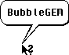

Modern GEM applications often include a bewildering array of options and icons which take time to learn. Even after learning a program interface a short break away from the keyboard often triggers amnesia!
The solution?
BubbleGEM! Programmers supporting this cute little program can add speech bubble help to their user interface making it much easier for users to find their way around.
There are two fundamental ways to call BubbleGEM. The following example code snippet describes the simplest way to call BubbleGEM from non-modal dialogs and window-dialogs. Since BubbleGEM Release 05 it's now also possible to call BubbleGEM from modal dialogs.
Before every Bubble-call, supporting applications search via appl_find("BUBBLE ") for the BubbleGEM AES application identification number (bubble_id). Once the AES ID has been received, a message BUBBLEGEM_SHOW (hexadecimal: 0xBABB) can be sent to the ap_id and should receive a BUBBLEGEM_ACK (0xBABC) message in reply.
It is important the character string passed is NULL-terminated, 255 characters maximum and global legible - otherwise this leads to memory corruption in systems with memory protection. Always request global memory.
The message BUBBLEGEM_SHOW should be sent out as soon as the the right mouse button is pressed - don't wait until the button is released!
The mouse coordinates are passed using x and y and these are used to determine where the speech bubble will be drawn. Calls for BubbleGEM may only be instigated from non-modal dialogs.
Changes to BubbleGEM bubbles are updated automatically, however, you can intervene manually using the vertical line "|" character. Preceding or following space characters are not necessary.
C example:
#include <portab.h>
/* BUBBLEGEM_SHOW - Message:
* msg[0] 0xBABB
* msg[1] ap_id
* msg[2] 0
* msg[3] mouse X
* msg[4] mouse Y
* msg[5/6] to NULL-terminated character string in global memory
* msg[7] 0
*/
...
#define MGLOBAL 0x20
#define BUBBLEGEM_REQUEST 0xBABA
#define BUBBLEGEM_SHOW 0xBABB
#define BUBBLEGEM_ACK 0xBABC
#define BUBBLEGEM_ASKFONT 0xBABD
#define BUBBLEGEM_FONT 0xBABE
#define BUBBLEGEM_HIDE 0xBABF
#define MagX_COOKIE 0x4D616758L
#define MiNT_COOKIE 0x4D694E54L
...
WORD msg[8];
WORD bubble_id;
BYTE *bubble_text;
/* Establish if Mxalloc() is available, if yes,
* then memory protection mode is set to "Global"
*/
if ((get_cookie (MagX_COOKIE, &val) == TRUE) ||
(get_cookie (MiNT_COOKIE, &val) == TRUE))
{
bubble_text = (BYTE *) Mxalloc (256, 0 | MGLOBAL);
}
else
bubble_text = (BYTE *) Malloc (256);
if (!bubble_text) /* Pointer invalid, no memory there */
return;
if (right_mouse key_button_pressed)
{
/* fill buffer */
strcpy(bubble_text, "My first help speech bubble.");
bubble_id = appl_find("BUBBLE ");
if (bubble_id >= 0)
{
msg[0] = BUBBLEGEM_SHOW;
msg[1] = ap_id;
msg[2] = 0;
msg[3] = x;
msg[4] = y;
msg[5] = (WORD)(((LONG) bubble_text >> 16) & 0x0000ffff);
msg[6] = (WORD)((LONG) bubble_text & 0x0000ffff);
msg[7] = 0;
if (appl_write(bubble_id, 16, msg) == 0)
{
/* Error */
}
}
}
A reply message BUBBLEGEM_ACK (0xBABC) is received with the pointer to the character string, whose memory can now be released. The array elements 2, 3, 4 and 7 are set to null (zeroed). On non-modal calls the BUBBLEGEM_ACK comes only after closing the bubble!
/* BUBBLEGEM_ACK (0xBABC) * * msg[0] 0xBABC * msg[1] ap_id * msg[2] 0 * msg[3] 0 * msg[4] 0 * msg[5/6] Pointer from BUBBLEGEM_SHOW * msg[7] Same value as msg[7] on sending BUBBLEGEM_SHOW; * presently 0. */ /* example code snippet */ pointer = *(BYTE **) &msg[5]; if (pointer) Mfree(pointer)
To make translation into other languages easier, please consider storing the character strings externally, for example in the resource file (RSC) or a separate ASCII file.
If on BUBBLEGEM_SHOW the bit BGS7_MOUSE (0x0004) in msg[7] is set, the passed coordinates are only used for drawing; BubbleGEM ascertains the mouse coordinates, which can be used to recognize mouse movement (leading to bursting the bubble) shortly before automatically re- displaying the bubble.
The procedure to call BubbleGEM from modal dialogs (see also the call routine) proceeds similarly to calls from non-modal dialogs, assuming the BGEM cookie is available, except BGS7_USRHIDE (0x0001) is set in msg[7] instead.
Additionally, after evaluating the mouse coordinates through the calling application, BUBBLEGEM_HIDE (0xbabf) must be sent to BubbleGEM. The evaluation of the mouse and keys on calling modal dialogs is the responsibility of the calling application.
On systems without wind_update, testmode is possible. Double help texts can be displayed (directly above one another). Currently this is not possible otherwise.
Here's a general routine in pseudocode.
bubblegem:=appl_find('BUBBLE ');
if bubblegem<0 then
begin
path:=GetEnv('BUBBLEGEM');
if length(path)>0 then
begin
{ start BubbleGEM in parallel, notice ID in bubblegem }
if bubblegem>=0 then evnt_timer(500,0)
end
end;
if bubblegem<0 then exit; { BubbleGEM not found -> Cancel}
StrPCopy(bubblebuf,helptext);
msg[0]:=BUBBLEGEM_SHOW;
msg[1]:=apID;
msg[2]:=0;
msg[3]:=mx;
msg[4]:=my;
msg[5]:=integer(HiWord(bubblebuf));
msg[6]:=integer(LoWord(bubblebuf));
msg[7]:=0;
if non-modal_call then
begin
appl_write(bubblegem,16,@msg);
evnt_timer(100,0)
end
else
begin
{ call from a system modal dialog: }
if not(GetCookie('BGEM',bgemcookie)) then Bing { Error }
{ modal call only possible if BGEM-Cookie available }
else
begin
msg[7]:=msg[7] or BGS7_USRHIDE;
appl_write(bubblegem,16,@msg);
evnt_timer(10,0);
graf_mkstate(dummy,dummy,ms,dummy);
if (ms and 3)=0 then { no mouse key pressed? }
begin
bclicks:=258;
bmask:=3;
bstate:=0
end
else
begin
bclicks:=0;
bmask:=3;
bstate:=0
end;
if not(GetCookie('BHLP',delay)) then delay:=200
else
delay:=(delay shr 16) and 0x0000ffff;
graf_mouse(USER_DEF,bgemcookie->mhelp);
evnt_timer(delay,0);
evnt_multi(MU_KEYBD or MU_BUTTON or MU_M1, bclicks, bmask,
bstate, 1, mX-6, mY-6, 13, 13, 0, 0, 0, 0, 0, msg,
0, 0, dummy, dummy, ms, dummy, dummy, dummy);
msg[0]:=BUBBLEGEM_HIDE;
msg[1]:=apID;
msg[2]:=0;
msg[3]:=0;
msg[4]:=0;
msg[5]:=0;
msg[6]:=0;
msg[7]:=0;
appl_write(bubblegem,16,@msg);
graf_mouse(ARROW,NULL)
end;
repeat
graf_mkstate(dummy,dummy,ms,dummy)
until (ms and 3)=0
end;
The configuration from applications is simply:
On receipt from BUBBLEGEM_REQUEST (0xBABA), BubbleGEM is called
normally (certainly with the coordinates from BUBBLEGEM_REQUEST) to
determine, after ascertaining the received coordinates, if help is
available for this position.
The message BUBBLEGEM_REQUEST is made up as follows: msg[0] :=
BUBBLEGEM_REQUEST;
msg[1] := demonID;
msg[2] := 0;
msg[3] := winID; { AES ID of the window under the mouse cursor
}
msg[4] := mX; { mouse coordinates }
msg[5] := mY;
msg[6] := KStat; { Status of the [Shift] keys }
msg[7] := 0;
The time-controlled help only functions non-modally.
For the help demon to function the System must support
wind_get(WF_OWNER).
The demon is on if bit BGC_DEMONACTIVE (0x0008) in the
BHLP-Cookie is set; after changes BUBBLEGEM_REQUEST (msg[3..7] nulled)
sent to BUBBLE.APP (previously HLPDEMON.APP)
If BGC_TOPONLY (0x0010) is set, the help demon is only active
for the topped window.
On/off switching the help-demon by VA_START (although using the
CPX is better because the state can be saved): "-demonon"
(="-demon1"), "-demonoff" (="-demon0").
The demon-timer defaults to 200ms. It can be changed in the
dtimer field of the BGEM cookie.
BHLP:
BubbleGEM evaluates the cookie "BHLP". The top WORD sets the minimum visible time a bubble is displayed; the default setting is 200 milliseconds. The lower WORD is a bitmap; if bit 0 is set (0x0001 = BGC_FONTCHANGED), this means the FONT_CHANGED message will be evaluated. If BGC_NOWINSTYLE (0x0002) (i.e. no-win-style, not now-in- style) set, the bubble help will be displayed as a speech balloon. Conversely a deleted bit corresponds to Windows-help style display. A bit set in BGC_SENDKEY (0x0004) means AV_SENDKEY is sent to the caller after closing the bubble via a keypress. BGC_DEMONACTIVE (0x0008) means the demon is switched on. BGC_TOPONLY (0x0010) decides whether the help demon is only active for the topped window.
BGEM:
In addition, the BGEM cookie is placed in the cookie jar. It is available only on launching BubbleGEM, therefore it is installed on starting BubbleGEM and removed with AP_TERM.
typedef struct
{
long magic; /* 'BGEM' */
long size; /* Size of the structure, currently 18 */
int release; /* Currently 7, never smaller than 5 */
int active; /* <>0, if immediately help is displayed;
0 otherwise */
MFORM *mhelp; /* Pointer to help-mouse form */
int dtimer; /* Demon-timer; Default 200ms; from Release 06 */
} BGEM;
The structure lies in the global memory. Important: dtimer is the only field released for read and write. All other fields are read only!
If you want to start BubbleGEM manually and it doesn't run, try setting the 'BUBBLEGEM' environmental variable. This specifies the absolute path to BubbleGEM including the program name. For example with MagiC, something like:
#_ENV BUBBLEGEM=D:\TOOLS\BUBBLE\BUBBLE.APP
On starting BubbleGEM a BUBBLEGEM_ASKFONT message will be sent to the AV-Server or the application with the AES ID 0. This should be answered with a BUBBLEGEM_FONT message (Jinnee supports this).
msg[0] = BUBBLEGEM_ASKFONT; msg[1] = apID; msg[2] = 0; msg[3] = 0; msg[4] = 0; msg[5] = 0; msg[6] = 0; msg[7] = 0; msg[0] = BUBBLEGEM_FONT; msg[1] = apID; msg[2] = 0; msg[3] = FontID; msg[4] = FontPt; msg[5] = 0; msg[6] = 0; msg[7] = 0;
If BubbleGEM receives this message, it immediately takes the font with the ID msg[3] and the point size from msg[4] to display help bubbles. The ID and point size is adopted without checking validity. Additionally BubbleGEM reacts to FONT_CHANGED if the corresponding checkbox is active in the CPX module.
msg[0] = AV_SENDCLICK /* 0x4709 */ msg[1] = ap_id; msg[2] = 0; msg[3] = ev_mmox; msg[4] = ev_mmoy; msg[5] = ev_mmobutton; msg[6] = ev_mmokstate; msg[7] = ev_mbreturn;
AV_SENDCLICK will be sent if the bubble was closed by clicking (as opposed bursting bubbles by releasing the mouse button!).
AV_SENDCLICK is the counterpart to AV_SENDKEY.